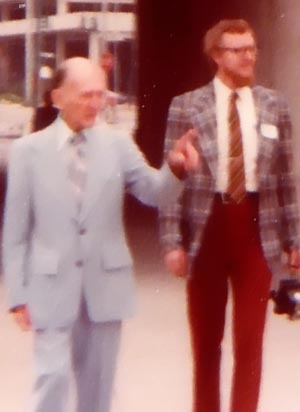
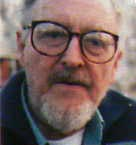

"Dick" Hall naît à Hartford (Connecticut). Il passe ses
premières années dans l'ouest de la ville, où il fait ses études à l'Ecole Sedgwick. Ses parents et ses 4 frères
partent à Pleasant Valley au milieu des années 1930s, où tous vont au lycée Gilbert de Winsted (Connecticut).
A l'approche de la guerre de Corée, Hall s'engage dans les cadets de l'USAF pour éviter d'être
mobilisé dans l'Armée et y sert début , après quoi il passe
6 ans dans la Réserve de l'USAF. Au cours de son affectation à la base de l'USAF de Keesler
(Mississippi), il travaille dans le département athlétique de la base et d'autres endroits des Services du
Personnel.
Après son retour à la vie civile il fait "un peu de tout" à droite à gauche durant quelques années, puis est engagé à
l'Université de Tulane à la Nouvelle Orléans (Louisiane), .
Initialement compétent en mathematiques, il est lassé de cette discipline et se focalise plus sur la philosophie. En
raison de ses bons résultats (A-/B+) il est approché par Phi Beta Kappa, mais n'est pas intéressé par ce qui lui semble
être des activités snobs. À partir de , Hall est plutôt intéressé par les nouvelles qui
apparaissent sur des observations de soucoupes volantes.
Hall décide d'offrir ses services au NICAP, et en
devient très vite directeur adjoint.
L'une des plus grandes contributions de Hall à l'ufologie est un rapport documentaire Hall, R. H.: The
UFO evidence, NICAP, Washington DC, 1964, 184 pp. de
200000 mots contenant 746 observations documentées par des gens de l'USAF, l'Armée,
la Marine et les Marines, des pilotes et experts en aviation et autres
membres du personnel militaire, des observations par des ingénieurs et scientifiques professionnels, dont des astronomes et ingénieurs en
aéronautique, qui est présenté au Congrès .
Donald E. Keyhoe et Hall Hall, R. H.: "UFO Page"

Après avoir travaillé une dizaine d'années au NICAP, puis démissionne
pour trouver un travail "honnête" (comprendre rémunéré) en raison de son mariage iminent. Durant un certain nombre
d'années par la suite, il travaille pour diverses associations commerciales à Washington (D.C.), et en tant qu'éditeur-rédacteur pour certaines sociétés de conseil
"Beltway Bandit". Le mariage ne réussit pas. Son dernier travail officiel avant une semi-retraite est le classement
de résumés au Service d'Information du Congrès à Bethesda (Maryland) durant une dizaine
d'années.
Hall est président du FUFOR de à . En
il est président de l'UFORC.
Hall ne voit pas dans la zone 51 autre chose qu'une base
militaire où sont développés des engins volants secrets, mais n'ayant rien à voir avec les extraterrestres. Il ne
croit donc pas aux déclarations de Robert Scott Lazar.
Hall

Hall décède .
Auteur de :
Hall, R. H.: Uninvited Guests: A Documented History of UFO Sightings, Alien Encounters & Coverups, Aurora
Press 1988, Santa Fe, NMex - Vue d'ensemble de l'ufologie contemporaire, traitant de questions spéculatives telles
que théories d'origine et des abductions, ainsi que des preuves solides de la réalité des ovnis. Contient une
annexe de près de 170 pages, comprenant des reproductions de documents obtenus via le FOIA. Contient également les documents MJ.
Hall, R. H.: They All Fought at Bull Run, Minerva: Quarterly Report on Women and the Military, fin 1991
Hall, R. H.: Patriots in Disguise: Women Warriors of the Civil War, Paragon House 1993, New York /
Marlowe & Co., paperback edition, 1994
Hall, R. H.: Women in Battle in the Civil War, Social Education, février 1994
Hall, R. H.: "Bridging 50 Years of UFO History", chapitre dans UFOs: 1947-1997, Hilary Evans & Dennis
Stacy, London: John Brown Publishing Ltd., 1998
Hall, R. H.: Signals, Noise, and UFO Waves, IUR, hiver 1998
Hall, R. H.: The Science of UFOs: Facts vs. Skepticism, ISS0 1999-12
Hall, R. H.: Loreta Janeta Velazquez: Civil War Soldier and Spy, chapitre d'un livre sur les minorités
dans l'histoire américaine (Dr. Philip Tucker 2001)
Hall, R. H.: The UFO Evidence, Volume 2: A Thirty Year Report, Scarecrow Press 2001